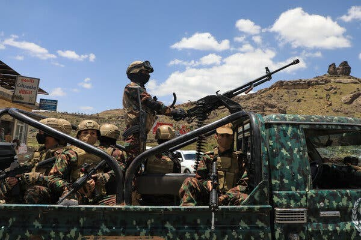
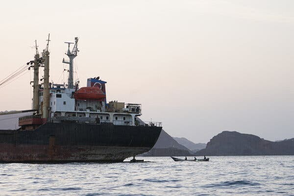

The popular image of Yemen’s Houthi rebels is of men on the backs of pickup trucks, firing AK-47s into the desert air.
Yet the group has launched long-range missile strikes at Israel, more than a thousand miles away. The Houthis prey on ship traffic in the Red Sea with naval drones. And evidence points to their growing ambition to use artificial intelligence and other means to produce more advanced weaponry themselves, making them less reliant on their sponsors in Iran.
Though they are backed by Iran, for months the Houthis remained on the sidelines of this year’s fighting in the region. That ended in July, when they declared a maritime blockade on Saudi Arabia. Since then, they have marched south, seizing the historic port city of Mokha last week while capturing islands near the narrow strait known as the Bab al-Mandab, tightening the group’s grip on the choke point at the southern end of the Red Sea.
“They use every opportunity to build their capability, to test their capability, such that they are now the most lethal nonstate actor in the entire Middle East,” said Timothy A. Lenderking, the former U.S. special envoy for Yemen, speaking at a Middle East Institute forum on Friday.
A report by Anthropic last week on the misuse of A.I. said that “a cell of threat actors based in northern Yemen,” where the Houthis have their stronghold, used Claude for “a sustained effort to develop guided weapons.” Despite Anthropic’s safeguards, the company said, the cell proceeded as far as the test firing of a guided rocket.
The Houthis still rely on their Iranian sponsors for the most sophisticated components in their drones and ballistic missiles, but as the Anthropic report suggested, in recent years they have become much more advanced at building their own weapons systems.
This has given the Houthis greater flexibility to maintain their fight against their Yemeni and Saudi adversaries, attack shipping traffic in the Red Sea and threaten Israeli and U.S. targets even with the U.S. Navy enforcing a monthslong blockade of the Strait of Hormuz.
Laboratory of War
The Houthis and their Iranian advisers were already experimenting with unmanned surface vessels a decade ago. The militant group used a remote-controlled boat loaded with explosives to attack a Saudi frigate all the way back in 2017, killing two people in the process.
After the Houthis captured Yemen’s capital, Sanaa, in 2014, Saudi Arabia led a military coalition propping up the country’s government and fighting back against the militants. A cease-fire was declared in 2022, but experts say the group has used the intervening years to dramatically advance its capabilities.
The truce gave the Houthis time “to regroup, retrain, refit, restock,” said Mr. Lenderking.

“The volume of goods being brought into Yemen to make weapons increased exponentially and the number of routes being used increased exponentially after the truce was announced in Yemen in 2022,” said Peter Salisbury, an adjunct professor at Columbia University’s School of International and Public Affairs, who has studied Houthi weapons manufacturing closely.
At first, Yemen was a laboratory for Iran’s pursuit of warfare. Increasingly, it is the factory, too. Mr. Salisbury said that larger parts like missile chassis are fabricated in Houthi-controlled territory rather than sent from Iran.
“Iran and Hezbollah have invested heavily in continuing to up-skill the Houthis in the manufacture and use of weapons,” Mr. Salisbury said. “Increasingly they’ve been able to indigenize the production of a lot of things like one-way attack drones.”
According to Farzin Nadimi, a senior fellow with the Washington Institute for Near East Policy, the Iranian defense industry has dedicated design bureaus and factories for weapons systems specifically for proxy forces like the Houthis that are “simple to assemble, simple to move, simple to prepare for launch and simple to use.”
Resilient Supply Chains
The Iranians encouraged the Houthis to develop additional supply chains for components from places like China, whose factories supply many of the drone parts used around the world.
“There’s a lot the Houthis don’t need anymore, and the reason they don’t need it anymore is because they’ve been able to use the global black market supply chain to get most of the things they need,” said Kevin Donegan, a former commander of the U.S. 5th fleet, whose area of responsibility included the Persian Gulf and the Red Sea, and who built the first intelligence fusion cell to study Iranian support for the Houthis.
“They do need key components still, especially for the missiles to make them effective,” Mr. Donegan said. “They have the ratlines that still can bring those components because they’re not the big pieces.”
Those might include guidance systems, rocket engines, and wing tips and fins that require a higher degree of precision engineering, Mr. Salisbury said.

While the U.S. Navy’s blockade focuses on large container ships and tankers, smaller components can be smuggled on medium-size vessels like the traditional dhows plowing the region’s waters. Shipments can be sent directly to Houthi-controlled areas of Yemen, transshipped via the Horn of Africa or even transferred ship-to-ship in the waters off the coast of Somalia. Mr. Salisbury calls it a “giant game of three card monte.”
Increased self-sufficiency is not necessarily the same thing as complete independence from their sponsors in Iran’s Islamic Revolutionary Guards Corps. “I think they pretty much still need a lot of help from the I.R.G.C.,” Mr. Nadimi said. He said that he believed there were “significant numbers” of I.R.G.C. officers involved in the planning and execution of the current phase of the fighting in Yemen.
The need for Iranian advisers and the more advanced components may explain how the renewed fighting in Yemen started this summer in the first place.
A Houthi delegation traveled to Tehran in July for the funeral of Iran’s supreme leader, Ayatollah Ali Khamenei. After, they boarded a flight home operated by Iran’s Mahan Air, which is under sanctions imposed by the United States government, back to Sanaa.
The Saudis and the Yemeni government believe that the aircraft carried Iranian military personnel and weaponry. When airstrikes prevented the plane from landing at Sanaa International Airport, the flight diverted and managed to land elsewhere in Houthi-controlled territory.
The Houthis then launched retaliatory attacks on Abha International Airport, in the southern part of Saudi Arabia. It was the first Houthi attack on Saudi Arabia since 2022, and began a new and unpredictable phase of fighting, with an adversary that spent years planning and advancing its tactics and technology.
If the Anthropic report is accurate, the group that was using Claude in northern Yemen tried to develop a multistage ballistic missile with a range of over 1,200 miles and a hypersonic glide vehicle. The would-be weapons designers were careful to avoid the company’s safeguards, hiding the true purpose of the guidance systems they were designing from the very system helping them design it.
Anthropic said there was no evidence that they were successful in “fielding an operational device.” The users queried Claude Code about why their field test had failed. “Nevertheless, we have evidence that the actors had already built an offline simulation toolkit that does not rely on Claude,” the report said.
Recent history suggests they will keep working to improve their capabilities.
“Keep in mind that the Houthis are always on the move,” said Mr. Lenderking, the former U.S. envoy. “They’re extremely entrepreneurial.”